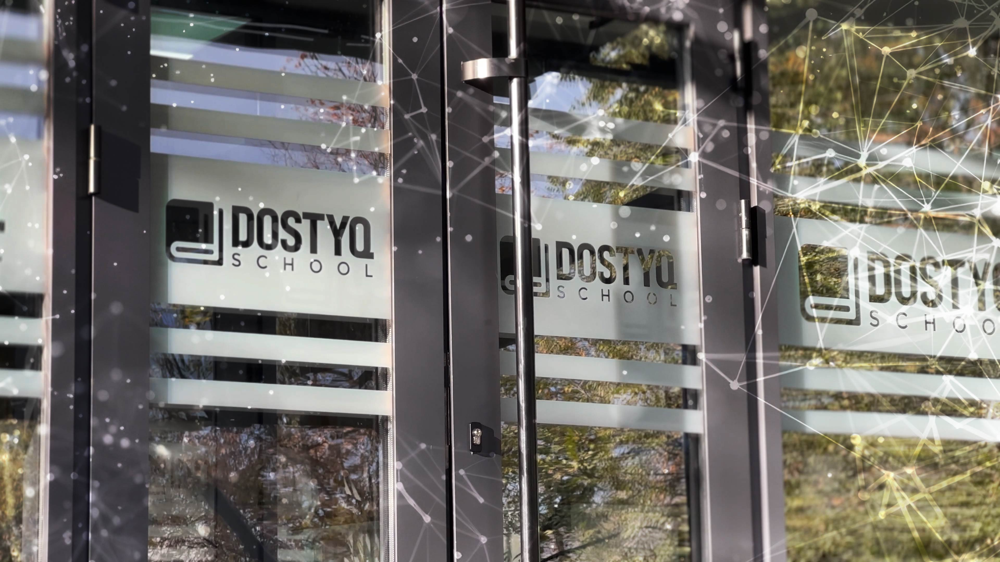

Главная
Экзамены
О Нас

Пәндік қайталау сынағы-1
10-сынып, 2024
Қазақстан тарихы
Бірінші болып тастарга кашалган ежелгі кескіндер туралы жазып, оларды суртке тусірді:
A) В.Радлов
В) В. Томсен
С) Н.Пантусов
D) В.Бартольд